I'm really sorry about this. I just love tea so much I had to make this.
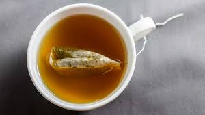I don't know what to say, really. It's just that... I'm so grateful for the existence of tea. Like I said before, I'm really sorry.

Why did I make this, you ask? You want to know why anybody would ever want to make what is, essentially, a fanpage for tea.
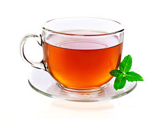Well, the answer to that is quite simple, really. I was bored. This is the result. When I am bored, you never know what I will end up doing... or making, I guess.
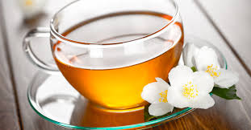Why are you still reading? What's the point? Are you really so intrigued by tea?
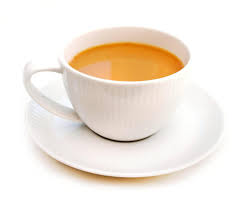Do you actually like looking at random pictures of tea? Have I found another tea worshipper? (Oh how sTEAlthy of me it is to change topics.)
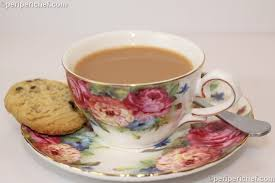Yes, I see that you, too, have a love for tea. How interesting.
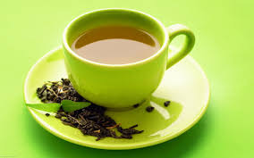You know, green tea is very good for you. I wonder if looking at tea has the same health benefits as drinking it. Ah, that would be such a good hypothesis for a TEAsperiment.
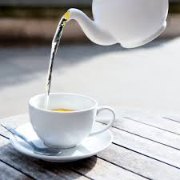Why would a TEAnage girl randomly make a tea website? What a brainTEAser.
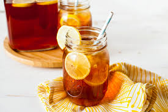Oh, how I wish I was drinking tea right now. But insTEAd, here I am, typing away on a keyboard.
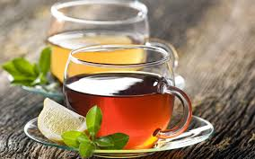Tea is really wonderful. It makes you feel at home, no matter where you are. Just that thought brings TEArs to my eyes.
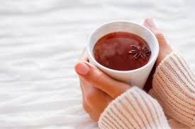At this point, you are probably getting pretty tired of scrolling through various images of tea.
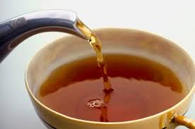Or, are you entranced? Does scrolling sTEAl your attention?
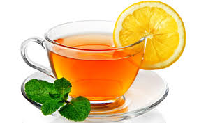How much do you really love tea?
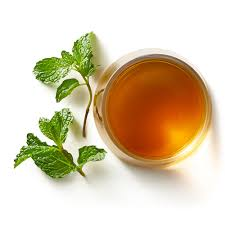Enough to scroll through this entire page?
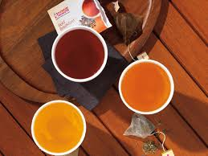Congrats, you just scrolled through fifTEAn pictures of tea. Haha. I'm so funny. I really hope this entertained you. And once again, I'm sorry.